Imágenes F8: Orleans v2 (izquierda) contra v3 con Seedream 5.0 Lite (derecha)
12 imágenes de la escaleta f7r3; a la izquierda, la foto de v2 en la misma posición relativa del mismo cap. Detalle en
humo/HUMO.md.
#01 · cap 1 · beat 1
«El sabor del agua sucia del inodoro en la boca.»
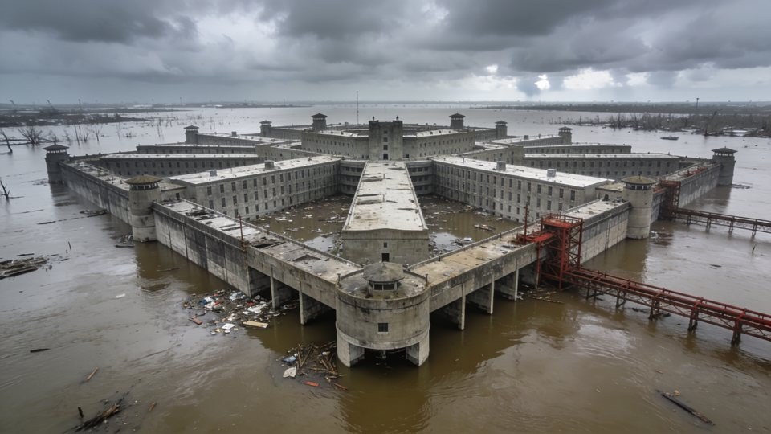
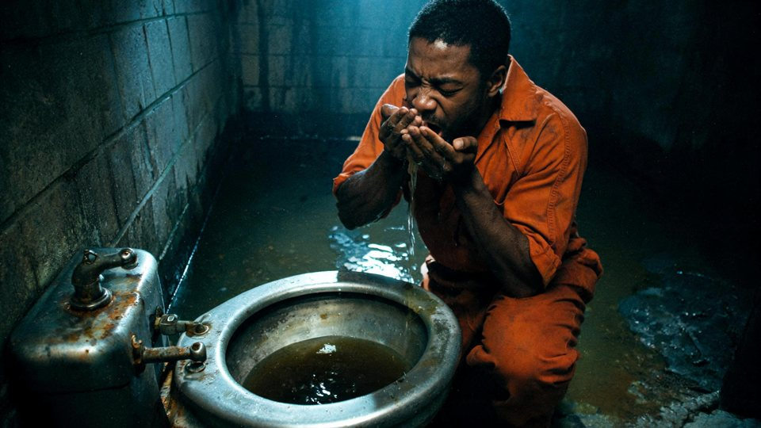
prompts
v2 An extreme wide shot captures the sprawling, multi-building complex of the Orleans Parish Prison, standing silent and isolated, its lower levels partially submerged in a vast expanse of floodwater. A static, wide tableau emphasizes the immense, unmoving structures against the still water, set within the prison complex in New Orleans, surrounded by miles of floodwater under a grim, post-hurricane sky. The bleak, overcast sky is reflected on the still, debris-strewn surface of the water, rendered in a color palette of desaturated greys of concrete, muddy brown of the floodwater, and touches of rust-red on steel elements. Flat, bleak daylight emanates from a thick, uniform grey overcast sky, conveying a mood of utter desolation and large-scale abandonment, with the massive structures appearing like a modern tomb. The style is documentary photographic realism, dark-history, and faceless, achieved with a deep depth of field, capturing the entire complex and its flooded surroundings from a high-angle, aerial perspective. The image has a 16:9 aspect ratio.
v3 Grainy 35mm documentary photograph, 2005, dark-history realism, muted colors, visible film grain, slightly underexposed. A medium shot of a gaunt African American man in his late 20s, with hollowed eyes and cracked lips, wearing a soiled orange prison jumpsuit, kneeling on a concrete floor, cupping dark, filthy water from a prison toilet bowl with his hands. His eyes are squeezed shut, facial muscles tensed as he brings the contaminated water towards his mouth to drink, in a dark, squalid prison cell. Murky, sewage-contaminated water is pooled on the concrete floor, with water stains high on the concrete block walls. A stained, institutional stainless-steel toilet, its bowl filled with stagnant, contaminated water reflecting a single sliver of light, dominates the foreground. The color palette consists of cold, desaturated blue-greys, murky greens and browns of the floodwater, and the sickly off-white of mold-stained concrete, with rust on metal fixtures. Low-key, single-source lighting is employed; a sliver of cold, hard light cuts through the darkness from a high, unseen source, creating a stark glint on the water's surface. The mood is claustrophobic and desperate; oppressive humidity hangs in the dark air, the scene is heavy with the silence of abandonment and the physical strain of survival. The style is documentary photographic realism, dark-history, and faceless. Shallow depth of field is used, focusing sharply on his hands and the water, with the background cell wall blurred into darkness. The camera is at a slightly high angle, looking down on the man's hunched form. The image has a 16:9 aspect ratio. 35mm film grain, muted documentary colors.
#02 · cap 1 · beat 1
«Y con ella, una decisión sobre a quién mantener dentro de los muros.»
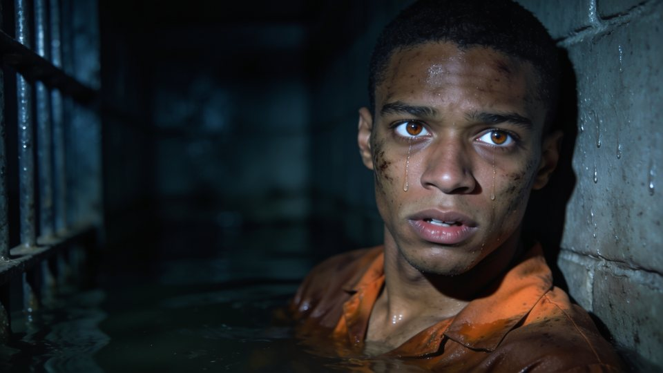
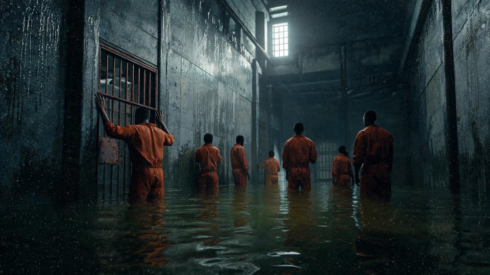
prompts
v2 A close shot captures a young, lean African American man in his late teens, his face streaked with grime, as he listens intently, his body completely still, pressed against the wet concrete wall of his cell. Staring directly forward through the lens, his pupils are dilated with the whites of his eyes visible all around the iris, and his jaw is trembling slightly. This scene unfolds in the dark interior of a flooded prison cell, with murky water visible at the bottom of the frame. Clean tracks left by tears cut paths through the filth on his cheeks. The color palette consists of cold blues and greys, with the orange of his soaked jumpsuit appearing almost brown, and stark contrast on his skin. A single, hard side light sculpts his features and highlights the wetness on his skin, leaving the other side in deep shadow, evoking the silent, crushing moment of realization and abject despair captured in a frozen instant. This is rendered with documentary photographic realism in a dark-history, faceless style, employing a shallow depth of field, with his face in sharp focus while the background dissolves into a dark blur. The camera angle is eye-level and confrontational. The image has a 16:9 aspect ratio.
v3 Grainy 35mm documentary photograph, 2005, dark-history realism, muted colors, visible film grain, slightly underexposed. A wide shot shows a group of African American incarcerated men, their orange jumpsuits soaked dark, standing silently in chest-deep, stagnant floodwater, trapped inside a large cell block. The figures are turned away or slumped against walls, one man has his back to the camera, hands braced against a solid steel door. This is a vast, flooded prison dormitory inside the Orleans Parish Prison complex, with high, dark watermarks on the concrete walls. A solid steel cell door, its surface reflecting faintly in the dark water, symbolizes their entrapment. The image uses a monochromatic palette of desaturated grays, deep blacks, and the murky brown-green of the floodwater, with spots of reddish-brown rust. Ambient, oppressive darkness, with faint, cold light from a distant high window creating weak reflections on the water's surface, illuminates the scene. A sense of hopelessness and entrapment pervades, with figures dwarfed by the massive, dark, water-filled architecture, all rendered in a documentary photographic realism, dark-history, faceless style. A deep depth of field captures the scale of the flooded space, viewed at eye-level. The image has a 16:9 aspect ratio. 35mm film grain, muted documentary colors.
#03 · cap 2 · beat 2
«El 28 de agosto sonaron las alarmas.»
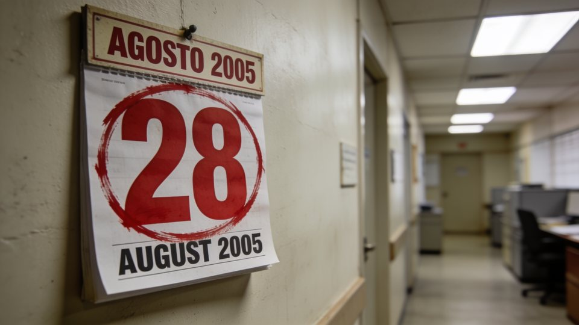
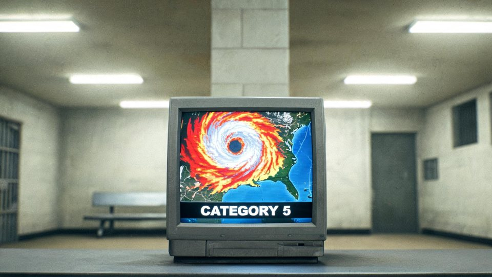
prompts
v2 A close shot depicts a 2005 wall calendar page for August, resting pinned to a sterile office wall, with the date '28' circled in thick red marker. The focus is drawn to the circled date, which stands out starkly in a nondescript institutional office with beige-painted walls. A standard office wall calendar, with blocky, sans-serif numbers, clearly shows 'AUGUST 2005'. The color palette features muted off-whites and beiges, with a single, jarring point of crimson red, under flat, even fluorescent office lighting. There is a sense of quiet, bureaucratic foreboding; an ordinary object marked for a future catastrophe, presented with documentary photographic realism, dark-history, and a faceless style. A shallow depth of field is used, with the number '28' in sharp focus and the rest slightly blurred, captured at an eye-level, head-on camera angle. A sign on the top of the calendar page reads "AGOSTO 2005" in a block font. The image has a 16:9 aspect ratio.
v3 Grainy 35mm documentary photograph, 2005, dark-history realism, muted colors, visible film grain, slightly underexposed. A close shot of a 2000s-era CRT television screen showing a weather broadcast map, displaying a menacing, brightly-colored graphic of a massive hurricane approaching the Louisiana coastline, the image just beginning to flicker. The camera's focus is centered on the hurricane graphic on the screen, highlighting the storm's projected path toward New Orleans. This is set in a sparse, institutional common room within the Orleans Parish Prison, with concrete block walls and utilitarian furniture visible in the soft-focus background, featuring the weather map on the CRT screen, showing a swirling hurricane symbol with a projected trajectory line pointing directly at the city, all occurring in 2005. The saturated reds and yellows of the weather map contrast with the faded institutional beige of the walls and the cool blue-white of the screen's background, under harsh, overhead fluorescent light from the room, with the television screen itself being the primary light source in the immediate frame. A sense of sterile, electronic foreboding is present; the clinical depiction of impending natural disaster contained within the old technology creates a quiet tension, rendered in a documentary photographic realism, dark-history, faceless style with shallow depth of field and an eye-level camera angle. The image has a 16:9 aspect ratio. 35mm film grain, muted documentary colors.
#04 · cap 3 · beat 3
«El 29 de agosto, Katrina tocó tierra.»
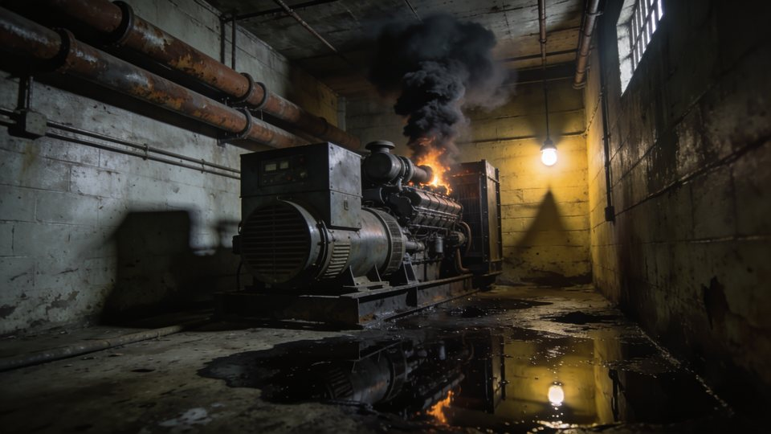
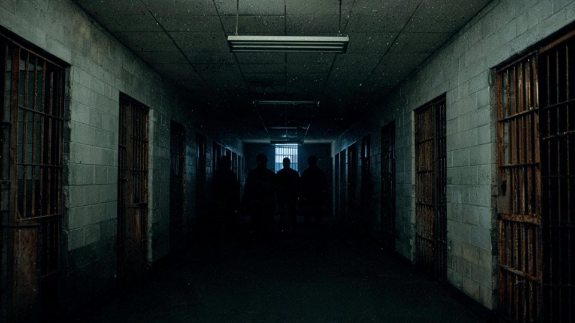
prompts
v2 A medium shot of a large, industrial backup generator sputtering violently, emitting a final thick puff of black smoke as it dies, with the focus on the machine's failure. It is set in a grimy, damp concrete utility basement within the Orleans Parish Prison complex, with rust-stained pipes on the walls, and a spreading puddle of dark, oily water on the floor, reflecting the last flickering light from the emergency bulb. The color palette is composed of industrial greys, rust-brown, oily blacks, and the sickly yellow of a single failing emergency bulb. A single, bare emergency bulb flickers erratically, casting harsh, moving shadows before extinguishing completely, evoking a mood of mechanical death, the extinguishing of the last artificial light against an encroaching, sodden darkness. The style is documentary photographic realism, dark-history, faceless, captured with a shallow depth of field from a low angle, depicting the year 2005. The image has a 16:9 aspect ratio.
v3 Grainy 35mm documentary photograph, 2005, dark-history realism, muted colors, visible film grain, slightly underexposed. A wide shot shows a long, dark prison corridor, with the silhouettes of a few African American male inmates visible in the far distance between cell blocks, falling into complete, unnerving darkness as the last flicker of emergency light dies. The figures are obscured by shadow, faces unseen; the scene's focal point is the vast, dark space. The high-ceilinged corridor is in a 2005 American prison, lined with solid steel cell doors and built from concrete blocks. A single, dead fluorescent light fixture hangs from the high ceiling, its tubes dark and cold. The color palette features muted institutional off-white and grey concrete, deep rust on steel, all rendered in deep blacks and cold blue shadows from faint ambient light. Near-total darkness prevails, with only a sliver of cold, stormy ambient light from a high, unseen window, creating deep shadows that obscure almost everything. The mood is defined by the abrupt silence and oppressive weight of absolute darkness in a vast, enclosed space, a sense of being trapped and blind, with the air thick and still. The style is documentary photographic realism, dark-history, and faceless, presented with deep depth of field from an eye-level camera angle. The image has a 16:9 aspect ratio. 35mm film grain, muted documentary colors.
#05 · cap 4 · beat 4
«El 30 de agosto, el agua sucia de la inundación irrumpió en las celdas.»
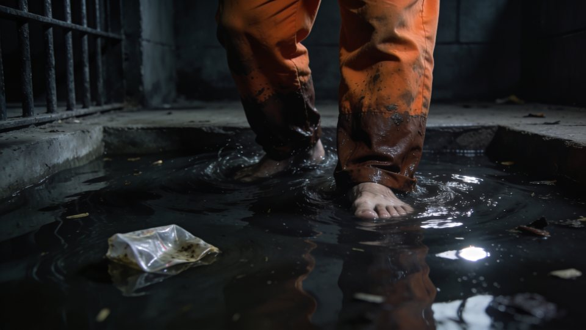
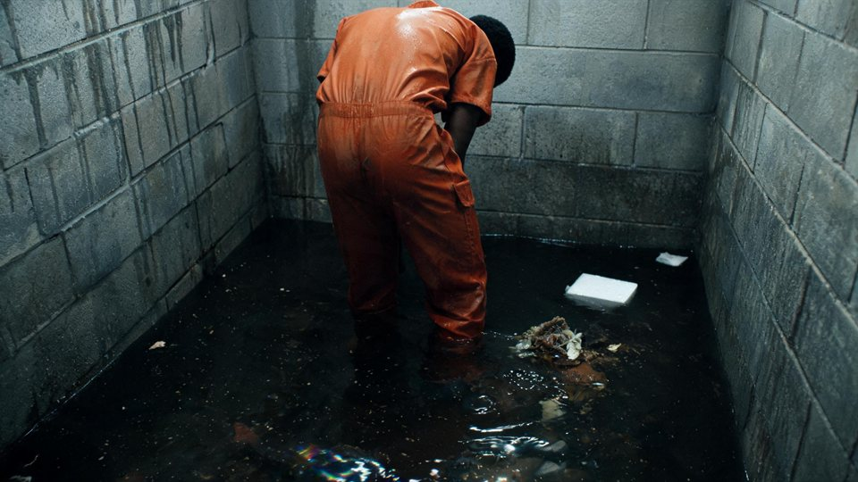
prompts
v2 A close shot captures the feet and lower legs of an unseen inmate, clad in a stained orange jumpsuit, standing as murky, dark water rapidly rises, swirling with unseen debris around their calves. The subject's focus is directed downward at the encroaching water, body tense, on the bare concrete floor of a prison cell plunged into total darkness. A single, grimy piece of plastic trash floats past the legs in the opaque water. The color palette is monochromatic deep grays and blacks, with the orange of the uniform appearing almost brown where soaked. The scene is almost completely dark, with a faint, cold ambient bounce creating unsettling specular highlights on the water's surface, all evoking encroaching dread, claustrophobia, and the physical sensation of being trapped by rising, unseen filth. This image, from 2005, is rendered with documentary photographic realism, dark-history, and a faceless style, employing a shallow depth of field with sharp focus on the waterline creeping up the fabric, captured from a low angle just above the water's surface. The image has a 16:9 aspect ratio.
v3 Grainy 35mm documentary photograph, 2005, dark-history realism, muted colors, visible film grain, slightly underexposed. A close shot of the lower body of an adult African American incarcerated person, wearing a soaked orange jumpsuit, standing in murky, rising floodwater inside a cell, as small pieces of debris and waste float on the oily surface. The person is looking down towards the filthy water creeping up their legs, inside a concrete block prison cell, where dark, contaminated water has submerged the floor. A piece of styrofoam and unidentifiable organic waste are floating on the iridescent surface of the diesel-smelling water. The color palette consists of oily blacks and murky browns of the floodwater, contrasted with the stained, wet orange of the uniform and the damp, gray concrete walls. Dim, non-directional light is filtering from an unseen source, reflecting dully on the water's oily sheen. A sense of inescapable dread is conveyed by the rising contaminated water and the confined space suggested by the tight framing, in a documentary photographic realism, dark-history, faceless style. Shallow depth of field, with focus on the waterline against the fabric of the jumpsuit, is seen from a high angle, looking down at the legs and the water's surface. The image has a 16:9 aspect ratio. 35mm film grain, muted documentary colors.
#06 · cap 4 · beat 4
«Desde la terraza de un edificio cercano, la amenaza era clara y letal.»
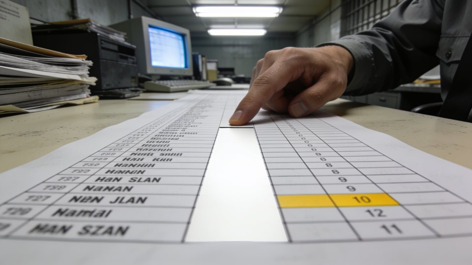
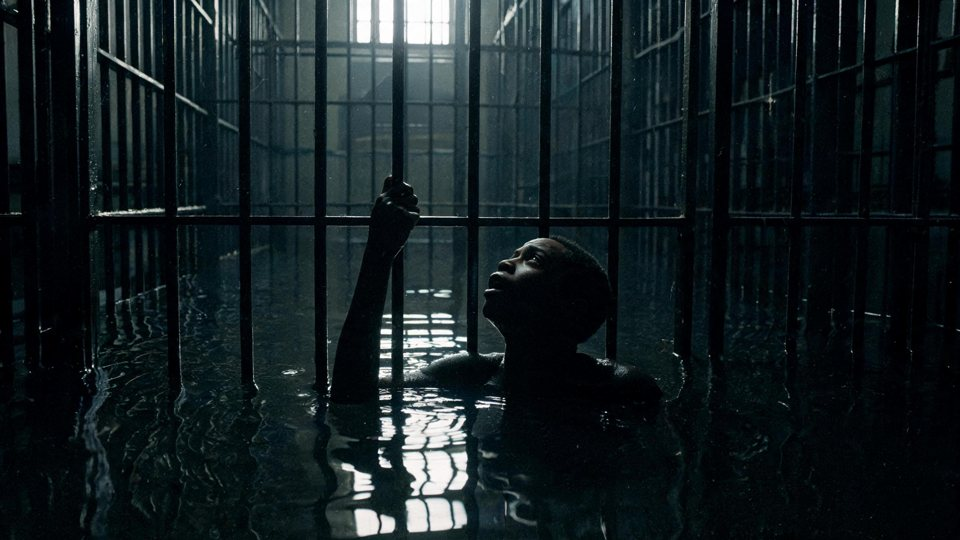
prompts
v2 A detail shot features a printed list of names on a desk, with an official's finger running down the long, typed list of inmate names, then stopping abruptly at a large, empty gap in the document. The official's unseen face is directed at the list; the camera's and viewer's focus is on the stark, white void on the paper. This scene unfolds in a cluttered, makeshift government office with stacks of files and a glowing CRT monitor visible in the background. The document itself is a spreadsheet printout, with the last entry before the gap highlighted in yellow, making the empty space that follows even more jarring. The color palette consists of the stark black and white of the printed list, the sterile beige of the desk, and the institutional gray of the office equipment. Harsh, buzzing fluorescent overhead light creates a cold, bureaucratic atmosphere, evoking a mood of sudden, stomach-dropping realization, bureaucratic horror, and the chilling shock of a numerical void where human lives should be. The style is documentary photographic realism, dark-history, and faceless, captured with a macro lens with extremely shallow depth of field, so only the empty space on the paper is in sharp, clinical focus. An over-the-shoulder shot looks directly down at the document. The image has a 16:9 aspect ratio.
v3 Grainy 35mm documentary photograph, 2005, dark-history realism, muted colors, visible film grain, slightly underexposed. A medium shot captures an adult African American incarcerated person of a thin build, submerged to the chest in dark water, leaning against the solid steel bars of a cell door, exhausted, with one hand gripping a bar just above the waterline. Their face is turned upward toward a high, unseen source of light, with their mouth slightly parted as if calling out within a flooded prison corridor, seen from inside a cell, where the water is chest-deep and stagnant. The reflection of a barred window is distorted on the rippling, filthy water in front of the subject. The color palette consists of deep shadows and blacks, with the subject's form silhouetted against a sliver of pale, overcast light reflecting on the water. Low-key, high-contrast backlighting from a single distant window wraps the subject in shadow, conveying utter desperation and abandonment, shown by the solitary figure trapped in darkness and filth, with help clearly out of reach. The style is documentary photographic realism, dark-history, and faceless, captured with a wide-angle lens, creating a sense of claustrophobia and isolation, from an eye-level camera angle with the subject's head and shoulders. The image has a 16:9 aspect ratio. 35mm film grain, muted documentary colors.
#07 · cap 5 · beat 5
«El oficial Brady Richard observaba desde un lugar elevado.»
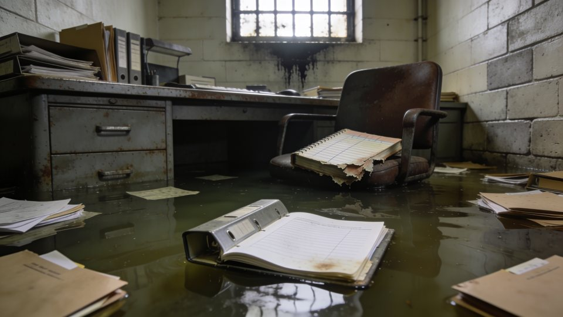
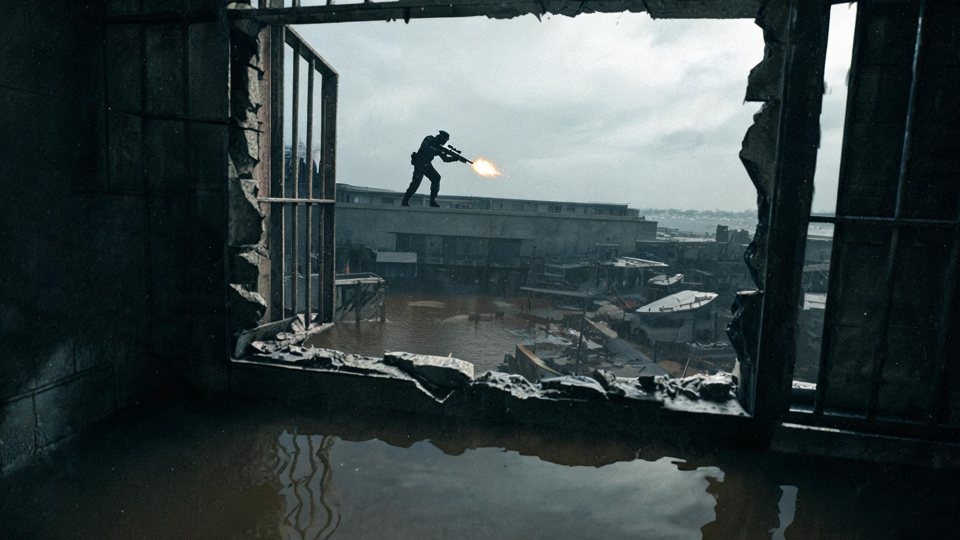
prompts
v2 A medium shot shows an empty clerk's desk in a flooded records room, with Manila folders and loose papers floating in the murky, stagnant water surrounding the desk. The focus is drawn to a single, open file binder floating on the water's surface, its pages empty and stained. This scene takes place in a prison administration office after the flood, with a high, dark watermark visible on the concrete block walls. A waterlogged ledger book, swollen and peeling, lies half-submerged on the desk chair. The color palette features faded institutional off-white and beige, rust-brown on metal furniture, murky green-brown water, and muted grays. Dim, ambient light filters through a high, grimy window, creating a somber, low-key atmosphere, conveying a heavy silence of bureaucratic collapse and untold loss; the air is still and thick with decay. The style is documentary photographic realism, dark-history, and faceless, using a shallow depth of field, focusing on the empty floating binder, captured at eye-level, angled slightly down. The image has a 16:9 aspect ratio.
v3 Grainy 35mm documentary photograph, 2005, dark-history realism, muted colors, visible film grain, slightly underexposed. A wide shot captures a distant, silhouetted uniformed figure on a concrete rooftop, firing a rifle towards an unseen area below, producing a sharp, bright muzzle flash. The figure is aiming downwards, focused intently on the target zone out of frame, body tensed in a firing stance. The view is from inside a dark, flooded prison cell, looking out through a broken window at the roof of an adjacent institutional building amidst a desolate, hurricane-ravaged New Orleans. A scoped rifle, characteristic of the early 2000s, is briefly illuminated by its own flash. The color palette features muted grays of concrete and an overcast sky, dark browns of murky floodwater below, all punctuated by a single, bright orange-yellow flash. The gloomy, overcast daylight is broken by a harsh, momentary burst of light from the rifle that briefly casts sharp shadows. The mood is a scene of cold, distant violence framed by confinement and decay; the sudden flash of light creates a jarring, terrifying contrast against the gray desolation. The style is documentary photographic realism, dark-history, faceless. A deep depth of field is used, with the jagged edges of the broken window in the foreground framing the distant action. The camera angle is eye-level from the cell's perspective, looking across a distance to the other building in 2005. The image has a 16:9 aspect ratio. 35mm film grain, muted documentary colors.
#08 · cap 5 · beat 5 pico · la más cerrada
«La espera en el paso elevado de Broad Street, bajo el sol de una Nueva Orleans destruida por Katrina.»
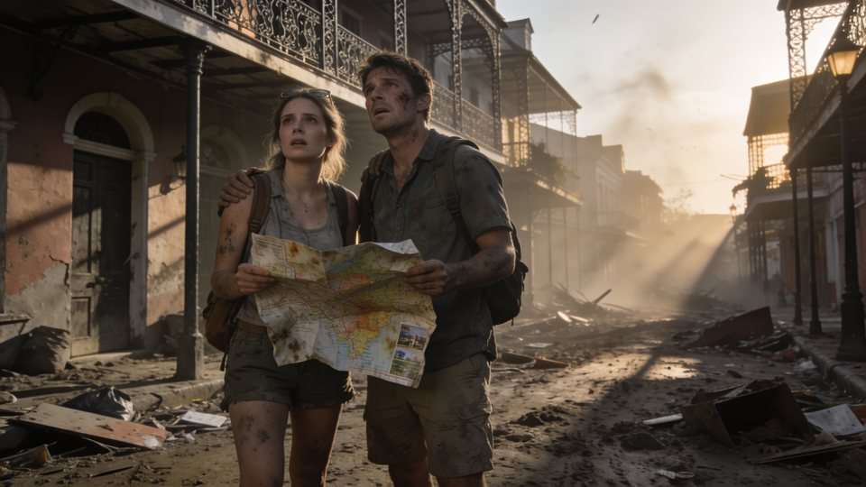
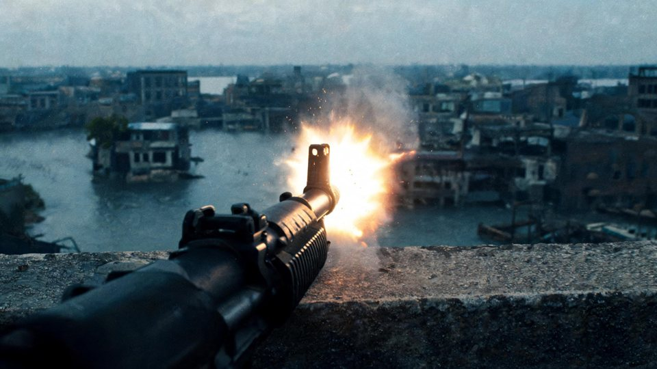
prompts
v2 A wide shot captures a white couple in their 30s, dressed in tourist attire, as they stand amidst the debris on a deserted street, looking disoriented and exhausted. They look at each other with a shared expression of disbelief, their faces smudged with dirt, shoulders slumped, against the backdrop of a recognizable but devastated Bourbon Street, its iconic wrought-iron balconies intact but the street level filled with mud and storm debris. One of them holds a water-stained, crumpled tourist map, its colors bled together. The normally vibrant colors of the French Quarter are desaturated, coated in a film of grey-brown dust and mud. Late afternoon 'golden hour' light, filtered through a dusty haze, casts long, eerie shadows, creating a mood of surreal displacement and the profound irony of outsiders becoming the central figures in a local tragedy of injustice. The style is documentary photographic realism, dark-history, and faceless, captured with a standard 50mm lens, placing the subjects firmly within their surreal, destroyed surroundings. The camera is at eye-level. The image has a 16:9 aspect ratio.
v3 Grainy 35mm documentary photograph, 2005, dark-history realism, muted colors, visible film grain, slightly underexposed. A detail shot captures the barrel of a law enforcement rifle discharging a round, producing a brilliant, starburst-shaped muzzle flash and a puff of smoke. The weapon is aimed downwards, away from the camera, towards an unseen target, set against the concrete parapet of a prison rooftop, with the flooded and ruined New Orleans cityscape blurred in the background. Particles of unburnt powder are caught in the bloom of the muzzle flash, creating a sense of frozen, violent motion. The dark, matte black of the rifle's metal is contrasted sharply by the explosive white, yellow, and orange of the muzzle blast, while the background is a desaturated gray-blue. The scene is primarily illuminated by the intense, self-contained blast of the gunshot, casting harsh, fleeting highlights on the weapon's surface, conveying impersonal, mechanical violence; the shot is captured with cold, forensic precision, detached from human cause or consequence. The style is documentary photographic realism, dark-history, faceless, with a shallow depth of field and sharp focus on the muzzle flash, achieved with an 85mm lens, and captured from a slightly low angle, looking up at the end of the rifle barrel. The image has a 16:9 aspect ratio. 35mm film grain, muted documentary colors.
#09 · cap 6 · beat 6
«Reclusos de la Prisión Parroquial de Orleans, con sus monos naranjas, sobre el asfalto caliente del paso elevado de Broad Street.»
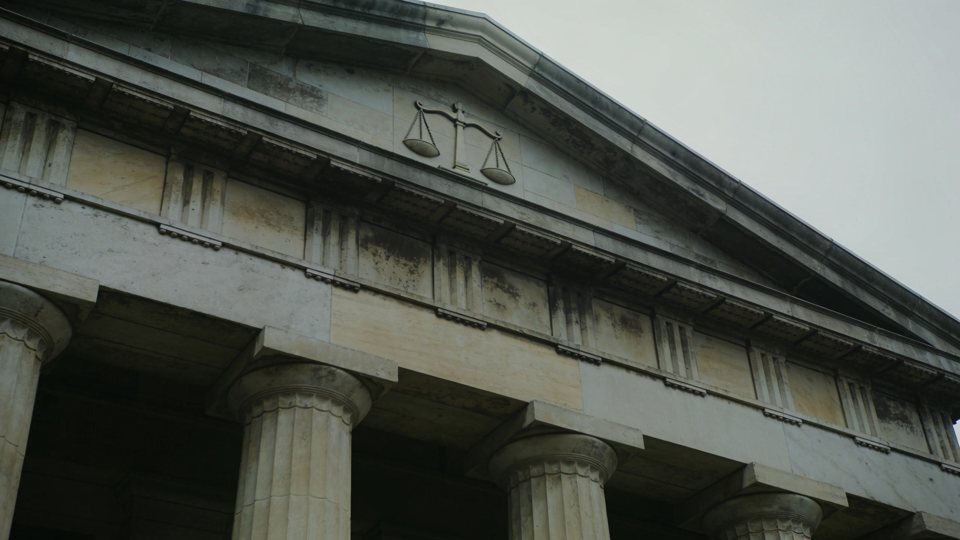
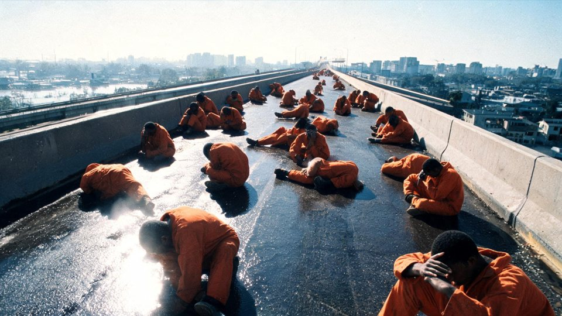
prompts
v2 A medium shot of a weathered neoclassical courthouse facade stands silent and imposing under a flat, grey sky, with the camera looking up towards the building's pediment, focusing on the architectural details of the exterior of an American federal courthouse, showing signs of age but structurally sound. The carved scales of justice on the facade are slightly darkened with age and grime, all rendered in muted tones of grey, limestone, and beige stone against a pale, overcast sky. Overcast daylight creates a flat and shadowless illumination, contributing to a somber, heavy atmosphere, conveying the slow passage of time, in a documentary photographic realism, dark-history, faceless style, utilizing a deep depth of field and a low angle. The image has a 16:9 aspect ratio.
v3 Grainy 35mm documentary photograph, 2005, dark-history realism, muted colors, visible film grain, slightly underexposed. A wide shot captures a group of exhausted, predominantly African American male inmates in faded orange prison jumpsuits, sitting and lying on the hot asphalt of a highway overpass, waiting under the sun. Their eyes squint against the bright sun, some looking down at the ground, others staring blankly into the distance. The setting is an exposed concrete and asphalt highway overpass in New Orleans, 2005, under a hazy, cloudless sky. The cracked and weathered surface of the asphalt road shimmers with visible heat waves. The color palette consists of washed-out grays of concrete and asphalt and a hazy pale blue sky, punctuated by the stark, faded orange of prison jumpsuits. Harsh, unfiltered midday sunlight casts short, dark shadows. An oppressive, stagnant heat rises from the ground; the figures are small and exposed against the vast, empty concrete structure. The style is documentary photographic realism, dark-history, and faceless, rendered with a deep depth of field using a 35mm lens from a low angle. The image has a 16:9 aspect ratio. 35mm film grain, muted documentary colors.
#10 · cap 7 · beat 7
«Oficialmente, la historia era simple.»
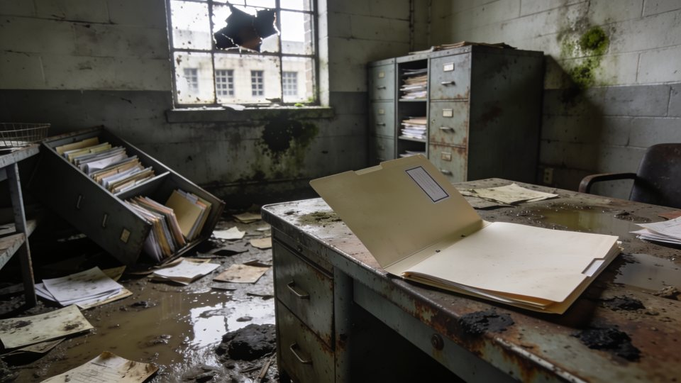
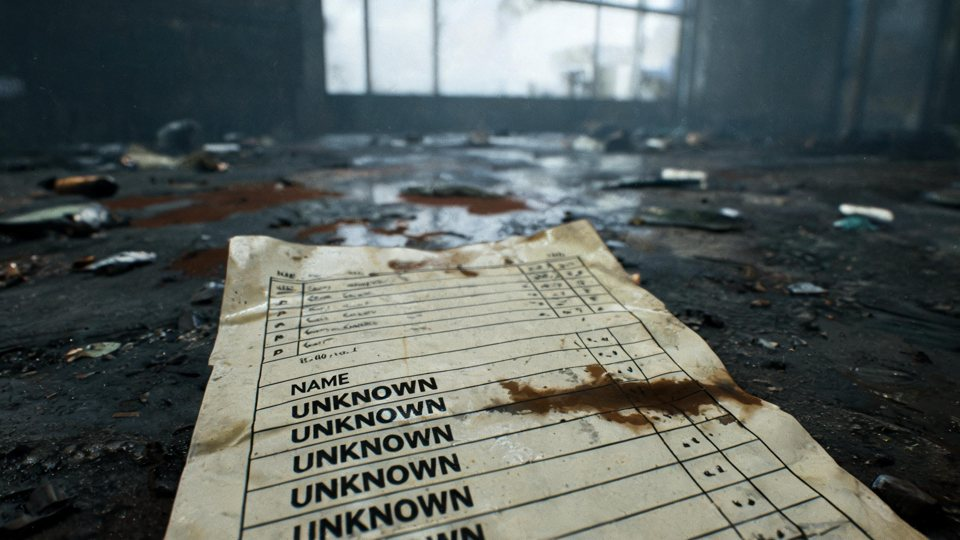
prompts
v2 A wide shot captures an abandoned prison administration office standing in ruins, with file cabinets overturned and papers scattered and soaked in mud across the floor. The scene's focus is on the destroyed records, a void of information within a derelict office inside the Orleans Parish Prison complex, post-flood, with mold blooming on stained walls. A single empty manila folder lies open on a muddy, water-damaged desk, its label completely obscured. The color palette consists of muted grays of concrete, beiges of rotting paper, dark brown and black mold stains, and rust on metal furniture. Flat, overcast daylight filters through a broken, grimy window, contributing to a heavy silence of bureaucratic collapse and irreversible loss of history. The style is documentary photographic realism, dark-history, and faceless, rendered with a deep depth of field, showcasing the entire scene of destruction in sharp, bleak focus from an eye-level camera angle. The image has a 16:9 aspect ratio.
v3 Grainy 35mm documentary photograph, 2005, dark-history realism, muted colors, visible film grain, slightly underexposed. A close shot reveals a water-stained official document lying on a dark wooden desk, showing typed names and handwritten marks. The camera's focus is drawn to several lines where the name has been replaced with a stark handwritten 'desconocido'. The setting is a dimly lit, makeshift administrative office in the chaotic aftermath of the hurricane, with stacks of paperwork in the background. The single sheet of paper is slightly warped from humidity, with a prominent water ring stain on one corner, showing columns for name, inmate number, and status. The color palette consists of aged paper yellow, stark black ink, muted browns, and the desaturated gray of a cluttered office. Harsh, directional light from a single desk lamp casts sharp shadows across the paper's surface. The mood is one of cold, bureaucratic stillness that hints at a vast, concealed human tragedy through the stark absence of information. The style is documentary photographic realism, dark-history, and faceless. A shallow depth of field keeps the text in sharp focus while the surrounding desk clutter is blurred. The high angle looks directly down onto the document. A sign or inscription or headline reads "DESCONOCIDO" in hasty handwritten block letters, in a column on the official list. The image has a 16:9 aspect ratio. 35mm film grain, muted documentary colors.
#11 · cap 7 · beat 7
«El sheriff Marlin Gusman ha sostenido que no hubo muertes en el complejo OPP durante la inundación.»
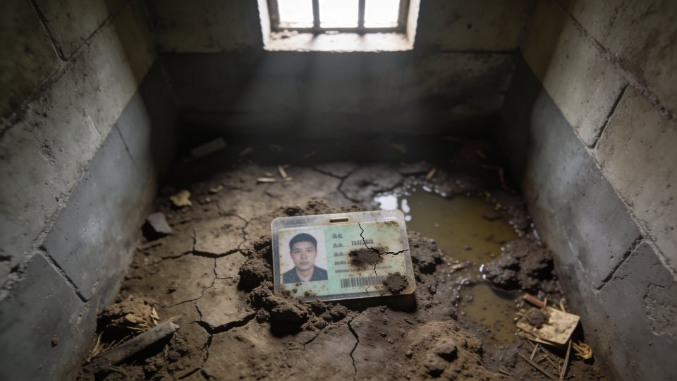
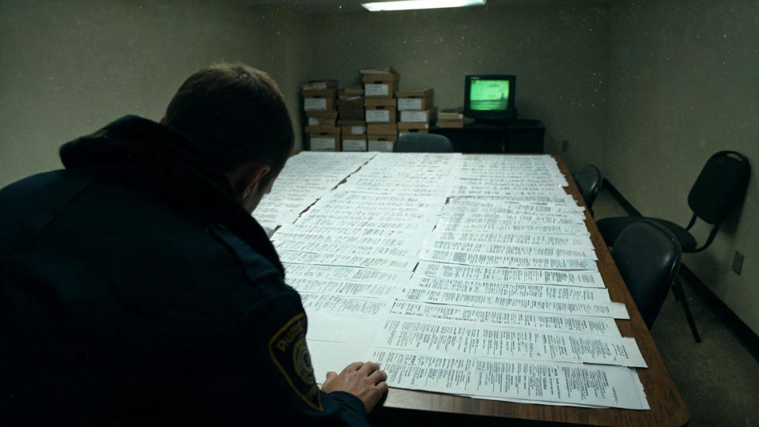
prompts
v2 A detail shot features a single, battered inmate identification card lying partially buried in the cracked, dried mud on the floor of an empty cell. The object is inert, its identity lost to the grime within an abandoned, post-flood prison cell where water has receded, leaving a floor of dried mud and debris. The plastic card is cracked, and its photo and name are completely obscured by a crust of dried, dark mud. The color palette is desaturated with earthy tones of dried mud, gray concrete, and the faded colors of the ID card. A single, harsh shaft of light from a high window illuminates the object against the darker floor, evoking a mood of profound, anonymous loss and the tangible evidence of a life erased from the record. The style is documentary photographic realism, dark-history, and faceless, utilizing extreme shallow depth of field, focusing only on the unreadable card and blurring the surrounding floor. The camera angle is directly overhead, looking straight down at the floor. The image has a 16:9 aspect ratio.
v3 Grainy 35mm documentary photograph, 2005, dark-history realism, muted colors, visible film grain, slightly underexposed. A medium shot captures a sheriff's department official, seen from the back in a dark uniform, standing over a large table, reviewing a sprawling, multi-page list of names. The figure's head is bowed, gaze directed down at the papers spread before them, with one hand resting on the table's edge. The setting is a temporary command post set up in a sparse room, with cardboard boxes of files stacked against a wall and a CRT monitor glowing in the corner. Dozens of printed pages are spread out and taped together, forming a long runner across the table, emphasizing the sheer volume of names to be accounted for. The color palette features a dark navy blue uniform, manila folder beige, stark white paper, and the sickly green glow from the computer screen. Low-key lighting, sourced from a single, flickering overhead fluorescent light, creates a grim and functional atmosphere. An overwhelming sense of grim duty and the sheer, impersonal scale of the disaster is conveyed, embodied by the faceless official and the endless list, all rendered in a style of documentary photographic realism, dark-history, and facelessness. A deep depth of field keeps the figure and the full width of the list in focus, from an over-the-shoulder shot, positioning the viewer behind the official. The image has a 16:9 aspect ratio. 35mm film grain, muted documentary colors.
#12 · cap 7 · beat 8
«Pero los guardias que estuvieron allí contaban otra historia.»
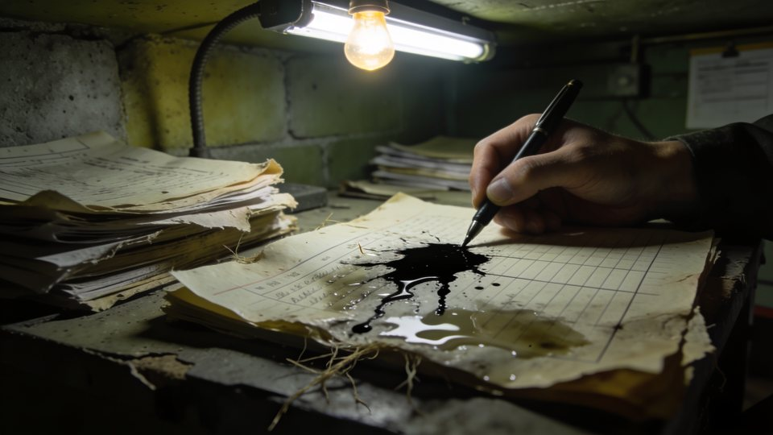
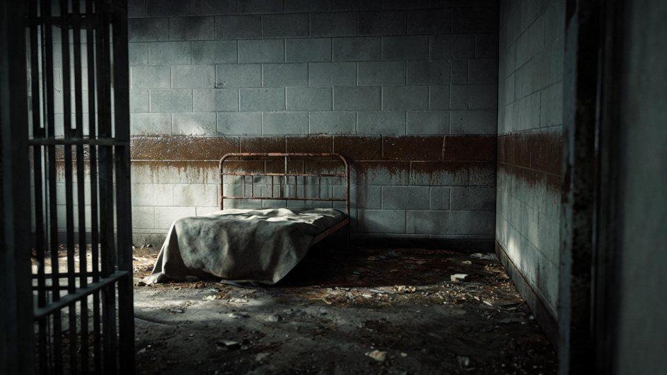
prompts
v2 A close shot depicts a person's hand attempting to write on a waterlogged ledger, pressing a pen to a sodden page, causing the black ink to bleed instantly into the damp, warped paper. The hand, belonging to an unseen person, moves with careful futility at a makeshift desk in a dimly lit emergency command post, surrounded by stacks of damaged documents. The ledger page is so waterlogged that the paper fibers are separating under the pressure of the pen tip. The color palette features sickly yellow-green from a single fluorescent lamp, gray concrete, and black ink bleeding on pulpy beige paper, all under harsh, direct overhead light from a single flickering fluorescent bulb. The mood is one of bureaucratic futility and desperation, capturing the physical act of a record being lost as it is made, in a documentary photographic realism style that is dark-history and faceless. A shallow depth of field focuses on the bleeding ink, captured at eye-level, tight on the hand and the disintegrating page. The image has a 16:9 aspect ratio.
v3 Grainy 35mm documentary photograph, 2005, dark-history realism, muted colors, visible film grain, slightly underexposed. A wide shot captures an empty, abandoned prison cell, sitting in desolate silence and bearing the clear evidence of past flooding. The focal point is a dark, grimy high-water mark running horizontally across the concrete block walls at chest level. This derelict cell is inside the Orleans Parish Prison, containing only a rusted metal bed frame bolted to the wall and debris on the concrete floor. A thin, discolored mattress, soaked and misshapen, lies slumped half on the floor and half against the wall beneath the bed frame. A monochromatic palette of damp concrete gray, reddish-brown rust, and the dark, muddy stain of the dried floodwater fills the scene. Dim, natural light filters from a source outside the frame, creating long, deep shadows and leaving the cell's corners in near darkness. The mood evokes a haunting stillness and profound absence; the space itself serves as a silent witness to unimaginable suffering, presented in documentary photographic realism, dark-history, and a faceless style. A deep depth of field renders the entire small, claustrophobic space in sharp, unsettling detail, captured at eye-level from the cell's doorway, looking in. The image has a 16:9 aspect ratio. 35mm film grain, muted documentary colors.
Foto madre por /edit de v5 Lite (ok, 31743 ms)
fal-ai/bytedance/seedream/v5/lite/edit
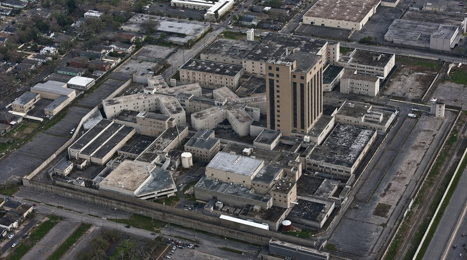
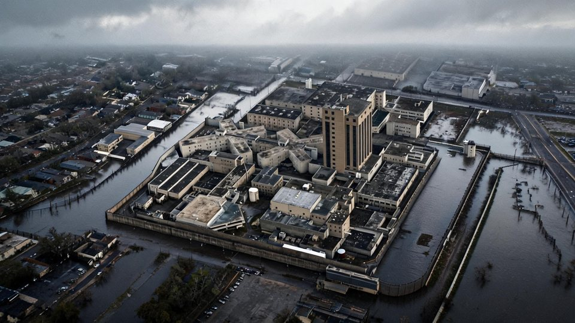
prompt
Grainy 35mm documentary photograph, 2005, dark-history realism, muted colors, visible film grain, slightly underexposed. An extreme wide aerial view of the Orleans Parish Prison complex surrounded by dark floodwater after the hurricane, overcast sky, the city flooded around it. The image has a 16:9 aspect ratio. 35mm film grain, muted documentary colors.